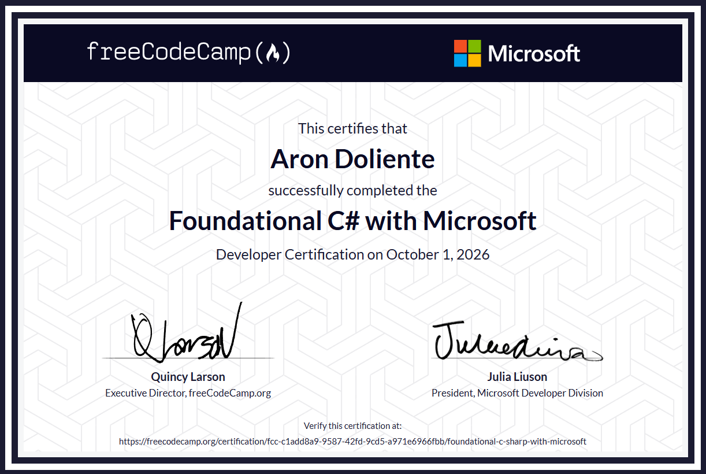

Web Development
Creating clean, responsive page layouts with HTML and CSS, with an interest in interactive experiences.
Currently developingIT STUDENT · FUTURE IT PROFESSIONAL
I’m an Information Technology student developing my skills in web development, programming, computer systems, and networking solutions. I enjoy learning by creating projects and finding simple ways to solve problems.
01 / ABOUT ME
My name is Aron Doliente, and I am an IT student working toward becoming a capable and dependable technology professional. I’m interested in how websites, applications, and computer systems are designed and developed.
Through coursework, certifications, and hands-on activities, I aim to improve my technical knowledge, creativity, teamwork, and problem-solving skills. This portfolio documents my progress, projects, and professional development throughout the semester.
02 / WHAT I'M LEARNING
A growing toolkit shaped by practice, coursework, and curiosity.
Creating clean, responsive page layouts with HTML and CSS, with an interest in interactive experiences.
Currently developingPracticing programming fundamentals, logical thinking, debugging, and writing understandable code.
Currently developingConfiguring computer systems, server management, and network setups through verified technical training.
TESDA CertifiedBuilding communication, collaboration, time management, and a habit of learning from feedback.
Growing through practiceSkill indicators are self-assessment visuals, not formal proficiency ratings. Update them as your experience grows.
03 / SELECTED WORK
A place to present school work, personal experiments, and what you learned from each one.
A website concept focused on clear navigation, readable content, and a layout that adapts to different screen sizes.
My contribution: Designed and structured responsive web pages utilizing clean HTML semantics and CSS layout practices.
Ask me about this projectA student project concept exploring how an application can help users access transportation information and make everyday trips more convenient.
My contribution: Mapped user interface wireframes, outlined workflow requirements, and researched core features.
Ask me about this projectHands-on database architecture and server-side development, focusing on database structures, user authentication, and data operations.
My contribution: Structured normalized SQL tables, wrote queries, and managed core application logic.
Ask me about this project04 / KEEP MOVING FORWARD
Certificates, seminars, trainings, field trips, and achievements from my learning journey.

05 / MILESTONES
Successfully designed and deployed practical coursework applications and system documentation.
Earned seven technical certificates through TESDA, Cisco Networking Academy, and freeCodeCamp with Microsoft, covering computer systems servicing, C# programming, networking, and server administration.
Continuously refining problem-solving strategies, hardware maintenance capabilities, and project collaboration skills.
06 / LET'S CONNECT
I'm continuing to build my skills and welcome opportunities to learn, collaborate, and grow in technology.